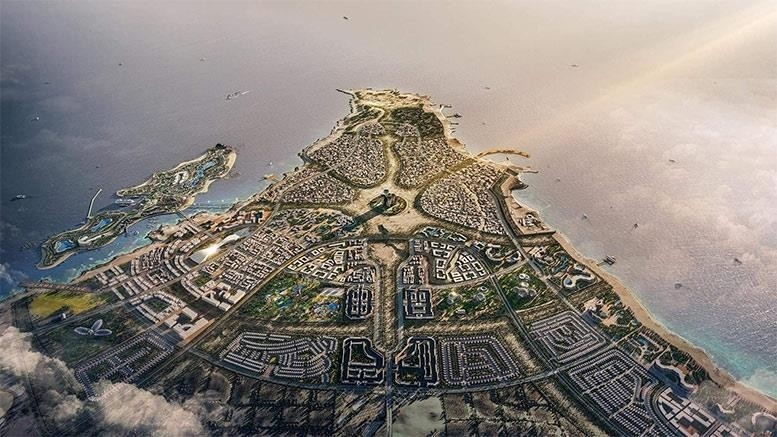

Tkaczyk News
SERWIS INFORMACYJNY
Ras El Hekma i czemu ZEA tak chętnie zabiera się do inwestowania w ten teren?
Lazurowa woda, egzotyczna roślinność, naprawdę biały piasek i tuż obok pustynia. Do tego całorocznie temperatura nie spadająca w zasadzie poniżej 20 stopni Celsjusza. Czego więcej trzeba europejskiemu turyście? W zasadzie nic więcej, Ras El-Hekma to prawdziwy raj na ziemi, który może zagwarantować emiratom długoterminowe zyski. Co więcej lokacja ta może okazać się interesująca także dla samego świata arabskiego, który do tej pory potrzebował całorocznego zielonego kurortu dla bogatszej części społeczeństwa. Odpowiada to na potrzeby samych mieszkańców Zjednoczonych Emiratów Arabskich, którzy nie są zwolennikami gorąca, oni wręcz kochają chłodniejsze temperatury oscylujące w przedziale 20 stopni Celsjusza- dlatego zimą gości także z tego kierunku z pewnością nie zabraknie. Utworzenie Dubaju 2.0 tuż przy samej Unii Europejskiej jest wręcz genialnym posunięciem, tym bardziej że będzie to miejsce luksusowe obsługiwane przez tanią Egipską siłę roboczą. To przykład współczesnej kolonizacji gospodarczej. Tym bardziej zważywszy na fakt, że średnia miesięczna pensja np. pracownika obsługi hotelowej wynosi w kraju faraonów około 100 dolarów. Nijak to się ma do tego, że nieco dalej na północ we Włoszech czy w Grecji za tą samą usługę trzeba by było zapłacić minimum 1000/1500 euro, a kurorty tam powstałe nie generowałby aż tak wysokich zysków z uwagi na barierę temperatury- która od listopada do kwietnia nie daje realnych możliwości przyciągania turystów, którzy w Europie upraszczając ,,chcą się wygrzać na słońcu”. To co teraz widzicie to mapa temperatur samej wody. Widać na niej wyraźnie, że obszar Ras El-Hekma gwarantuje w zimę około 21 stopni Celsjusza kiedy bliżej Europy morze śródziemne osiąga zaledwie temperaturę od 13 do 17 stopni. Walory klimatyczne oraz krajobrazowe z pewnością miały ogromne znaczenie w kontekście zakupu przez Zjednoczone Emiraty Arabskie tych ziem, tym bardziej patrząc na wizualizację planowanego w tym miejscu nowego super-miasta. Aczkolwiek jak podkreślił sam inwestor cytat: ,,planujemy na tym terenie utworzenie miasta przyszłości, które będzie na morzu śródziemnym centrum turystycznym, finansowym, przemysłowo-technologicznym oraz logistycznym.”. Projekt wierząc zapewnieniom ma mieć ogromny rozmach, ale sprawdźmy czy są już jakieś dokładniejsze postanowienia w kontekście planowanej tam infrastruktury. Umowa oprócz zakupu gruntu- zawiera zapis o budowie o wartości 150 mld dol. nowego miasta o nazwie Ras el-Hekma czyli tak samo jak nazwa półwyspu. Według doniesień podanych przez Cairo24 miasto ma zajmować obszar około 200 kilometrów kwadratowych i ma zostać ukończone w ciągu najbliższych 20 lat. To obszar większy niż zajmuje przykładowo miasto Paryż. Sam projekt po części powstał we współpracy z rządem Egiptu, który ma partycypować w 35% w zyskach.
3.03.2024, 20:05